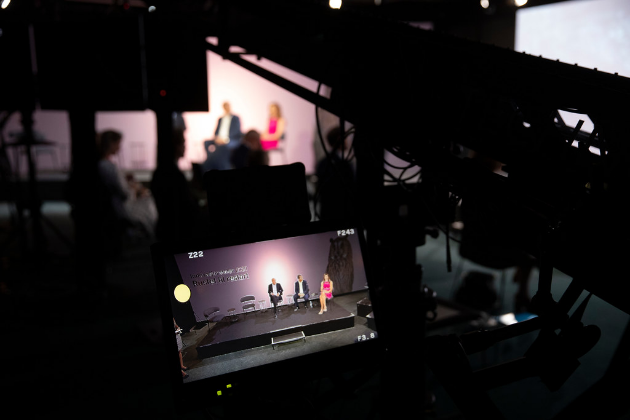
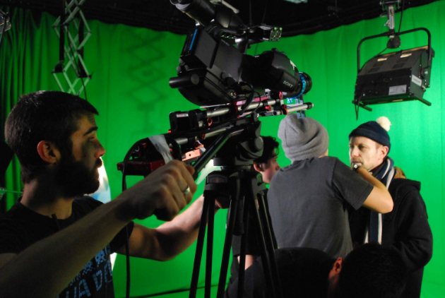

Film, Television and New Media
Objective
/ Film, Television and New Media
STUDIES PROGRAM


The Master’s Degree in Cinema, Television and Multimedia Production allows the deepening of the methodological tools for the study of cinema, television and new media and the increase of historical, theoretical, critical and practical knowledge in the same fields, also with reference to processes of transposition of acquired skills into didactic form. He also develops high skills in the study of communicative and expressive phenomena of the past and present, with particular attention to the typological and technological transformations of the last decades.
The course, as part of a unitary training project, is divided into two curricula. The basic one includes teachings relating to cinema theory, film analysis methodologies, the history of film styles and modes of production; as well as the contemporary development of digital media, television narratives, digital arts and forms of media communication. The other curriculum, of an international nature (IMACS: International Master in Audiovisual and Cinema Studies), allows students to spend two semesters at a foreign consortium university, as well as to tackle the same areas by coming into direct contact with teaching methodologies and research results from different countries. For both courses it is possible to follow courses taught in English.